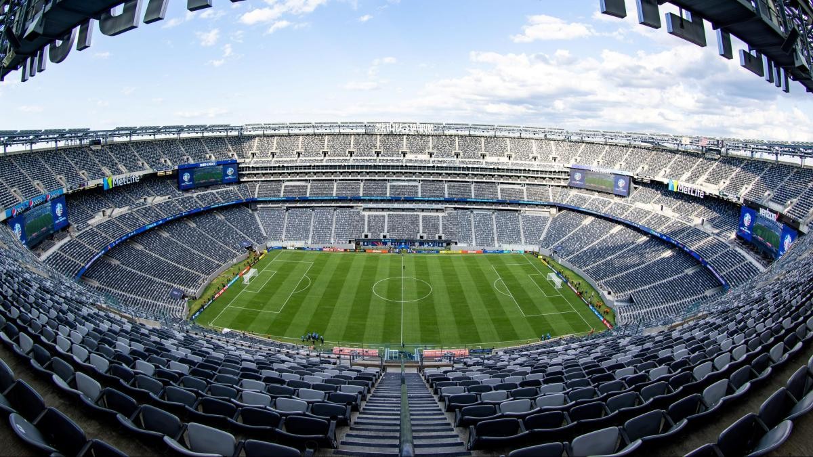

¡Hicimos Historia en las Eliminatorias!

La Selección Ecuatoriana de Fútbol selló una eliminatoria espectacular rumbo al Mundial de Canadá, Estados Unidos y México 2026. Tras finalizar en la segunda posición de la tabla de CONMEBOL con 29 puntos, "La Tri" demostró estar lista para competir de tú a tú con los gigantes del planeta.
Bajo la dirección técnica y el liderazgo de una generación dorada, Ecuador jugará la fase de grupos en el Grupo E, donde se medirá ante rivales de peso mundial: Costa de Marfil, Curazao y Alemania. ¡El país entero se pinta de amarillo!
Ver sitio oficial de la FIFA 🌍Nota: Este sitio web estático implementa navegación interna mediante enlaces relativos, distribución con CSS estructural.